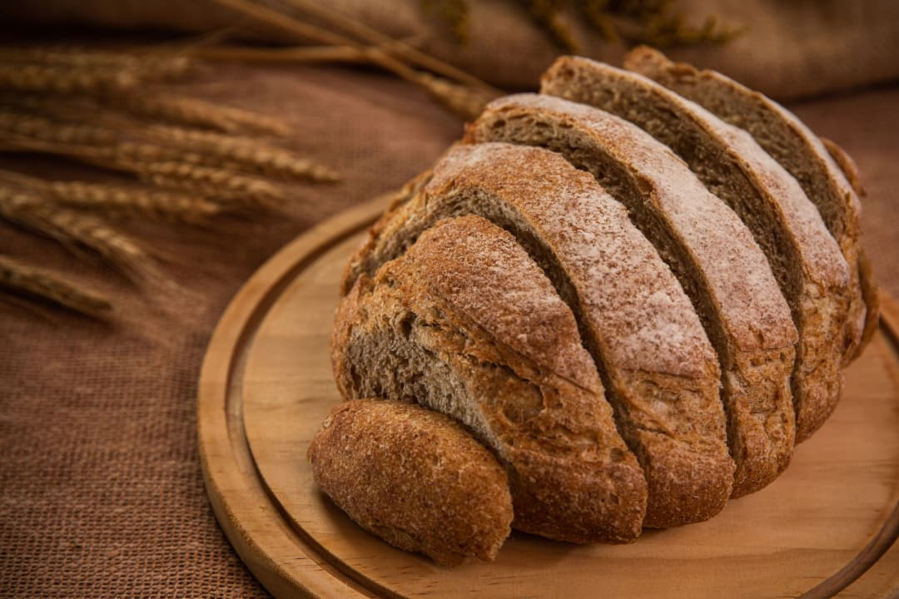

À propos de
Maison Lucas
Une boulangerie artisanale au service de votre quotidien

Notre histoire
Maison Lucas est née d’une passion : celle du bon pain et du travail bien fait. Artisanale et familiale, depuis des années, nous mettons tout notre savoir-faire pour vous offrir des produits authentiques et savoureux.
Nos valeurs
- ✓ Qualité : des ingrédients sélectionnés avec soin
- ✓ Tradition : un savoir-faire artisanal
- ✓ Proximité : une boulangerie à votre écoute